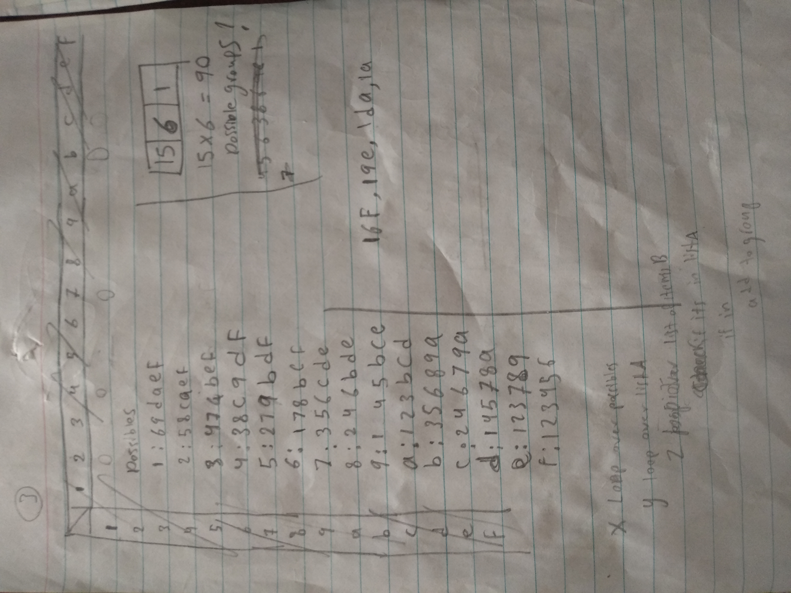
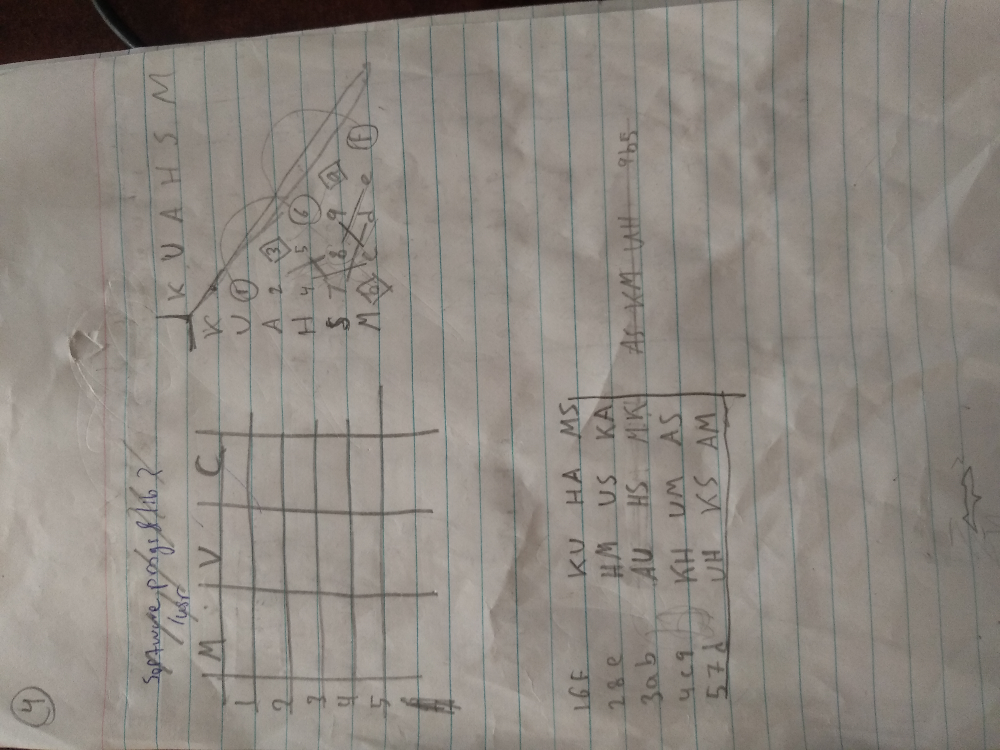
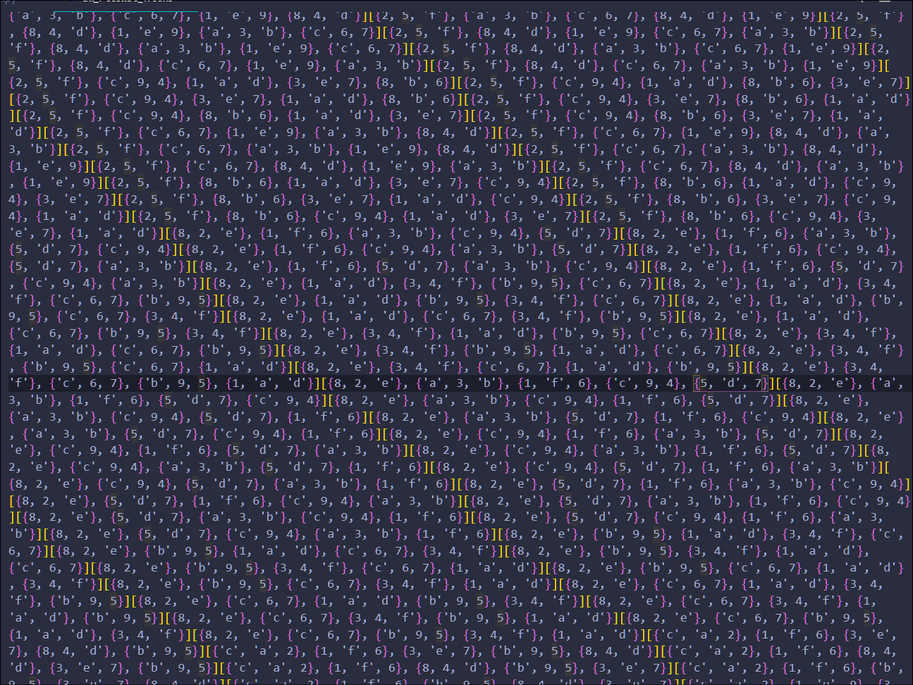

at first i wanted to make a nonconflicting groups in a day where no one appears twice in two group. you work with every member of the gruop. and everyone passes on each aspect at least once and no more than 2
nvm it's a story for another time


kataya 13232 1
arafa 32213 1
hassan 21313 2
Moa'az 12321 3
Sahar 31131
kholoud 23121 3
